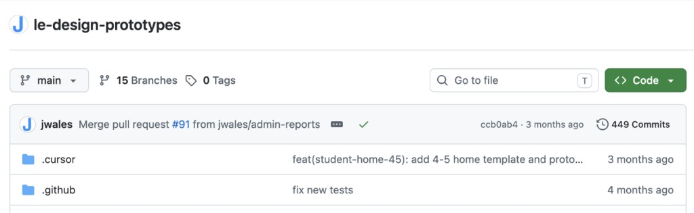
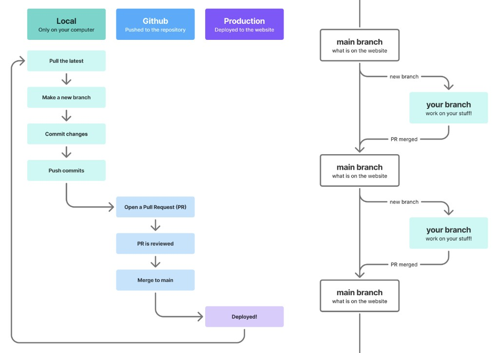

Background
In November 2025, the newest product designer on my team shared a link to an event recording where designers from various tech companies shared how they were using Cursor on their teams. I had recently been dusting off my local development environment and was intrigued by this new tool. Someone in the audience asked a question and mentioned it took them 3 days to get started using Cursor. Cursor's website did not make it look like this was a tool for design teams. Then we found Elizabeth Lin's Prototyping with Cursor course. That designer and I took the course together to see if Cursor would be a useful tool, and we were off!
Getting Started
In Elizabeth's course, we learned how to use Cursor, but I was struggling to figure out how we might actually use it *at work*. How did other companies organize their work? Would everyone have to learn how to use GitHub? What workflows did we need to establish? Should we *gulp* use the actual codebase? I decided the least disruptive path would be to set up a new prototyping repository for the designers and product managers to use. Since almost everyone using Cursor was new to GitHub, folks were nervous that they might accidentally mess something up when they merged a pull request, so this separate repository was incredibly helpful in assuring them there was nothing high stakes that could break. At most, you might take down a prototype someone else worked on, and we could quickly revert the change if needed.

A few other product managers and designers also signed up for the PD course to learn how to use Cursor as a tool. Two of them were working on a big redesign of one of our main content pages with stakeholders on nearly every team at the company. The designer was creating dozens of different iterations of the page in Figma so we could user test the unique use cases of different subsets of our users. The product manager and designer threw out the idea: ...what if we take this problem to Cursor? I joined their effort mostly as tech support to learn how we might work on projects together in this new way. To avoid duplicate work or merge conflicts (which become much less daunting to fix with Cursor!), the designer focused on getting a beautiful-looking starter page while the product manager wrote scripts to import content from dozens of examples - what would have been an incredibly tedious process in Figma. Once the main views were in place, it was easy to keep adding functionality and iterating. This was a very interactive page and we wanted to make sure users were still able to find everything they needed. Being able to hook up interactions for everything across each different version of the page took a few tweaks of the scripts. It felt like magic!
We ended up user testing over 42 different versions of the page, getting incredibly helpful feedback that was incorporated for a successful release. This was also the tipping point to making this Cursor side exploration a more official tool in our toolkits.
Piloting
After working with our internal procurement teams, we set up a Cursor pilot with about 15 folks across the team. During this month-long pilot, I focused on making the prototyping repo a great place for anyone to work. As folks made prototypes, we turned the base views into reusable templates. We imported the design system components. We refined skills. I wrote and revised onboarding documentation. Anytime someone ran into an issue or had an idea they wanted to brainstorm, I hopped on a call with them to discuss so we could all learn together. Some of our most important lessons from the pilot were to start small in Cursor. What is the most basic thing you want to build to achieve your goal? Get that to work first. Then you can add more complexity. We also learned our way around the different models (and their costs!), started tracking our pro-tips for prompting, and collaborated with our engineering colleagues on an updated deployment flow (bye Vercel - we love you!)
At the conclusion of the pilot, we were ready to onboard the team. We had Elizabeth Lin lead two sessions for folks, the last of which was at our annual team onsite in May 2026. After the session, everyone broke into teams for our annual design hackathon, this year with the charge to use Cursor to prototype their idea. It was incredible to see everyone use these new skills together to bring an idea to life so quickly. They were able to start from a template, use the design system, and go through the PR process together so everyone could click through their prototype.
I led a few refresher sessions for folks who missed that team onboarding, including a product manager and designer who were able to dive right in to build a prototype and iterate on it in Cursor in a week ahead of user testing.
Lessons learned
When we started on this journey, most folks on the design team were unsure of how AI might fit into their workflows. What kind of AI usage would empower them instead of replace them? I led sessions with the full platform design team and a small working group to unpack these topics together. We ended with guidelines for using AI in our work that we shared before the broader Cursor training rolled out so everyone could keep them in mind as they learned. Prototyping together during the hackathon was also a great way for everyone to see how Cursor might fit in their process. Teams still started with brainstorms on whiteboards and sketching together before jumping into Cursor. They still collaborated and brought their expertise to the work. Cursor was a tool to help them bring it to life faster.
Most folks were new to GitHub and didn't like how technical Cursor felt. There was 30 minutes of prework in terminal before they could even get started in Cursor. After some initial ramp up, I saw most of these folks helping each other with prompting or getting their prototype to run locally. Folks were able to better understand the language of their engineering peers and how things come together in the actual codebase work.

One we keep coming back to is: know when to stop. It's so easy to send one more prompt, one more prompt. What is the goal of your project and what is most important to achieve that goal?
We've also paid closer attention to fidelity, adding a "wireframe theme" to our repo after I received questions about implementation details on a very sketchy prototype that looked too real.
What's next
We now have product managers and designers working together in Cursor on a regular basis. Instead of looking at static screens together and imagining how things might work, spinning up a clickable prototype and iterating on interaction design is a seamless part of the process. We're still ironing out our workflows around Cursor. Can it be the handoff artifact? If so, how do we document things well for our engineering partners? Can we get prototype screens back into Figma, complete with design system Figma components? Could we use Cursor in the actual codebase? Each project has been an opportunity to learn something new.